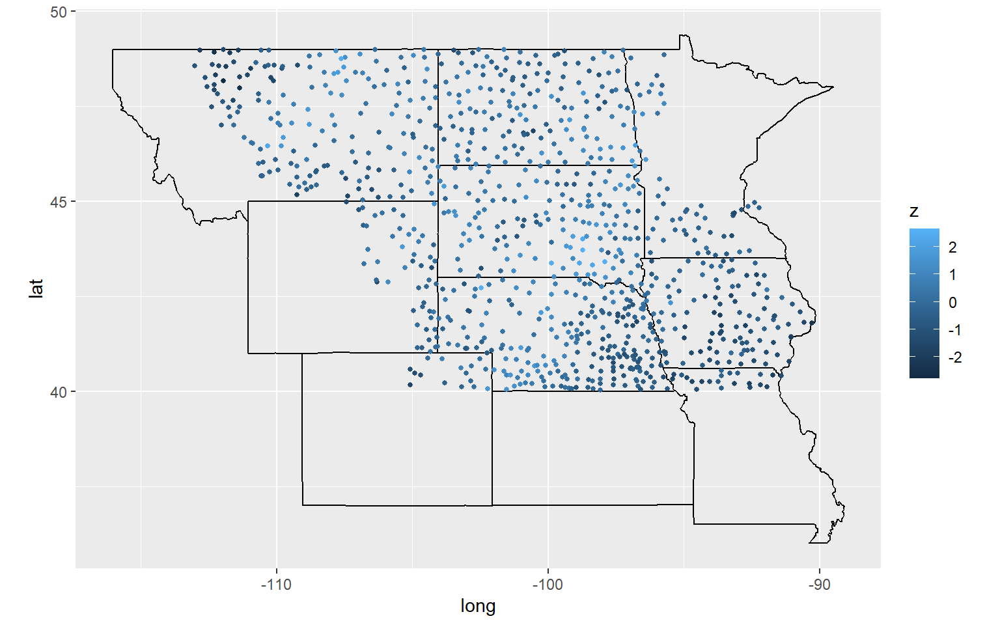
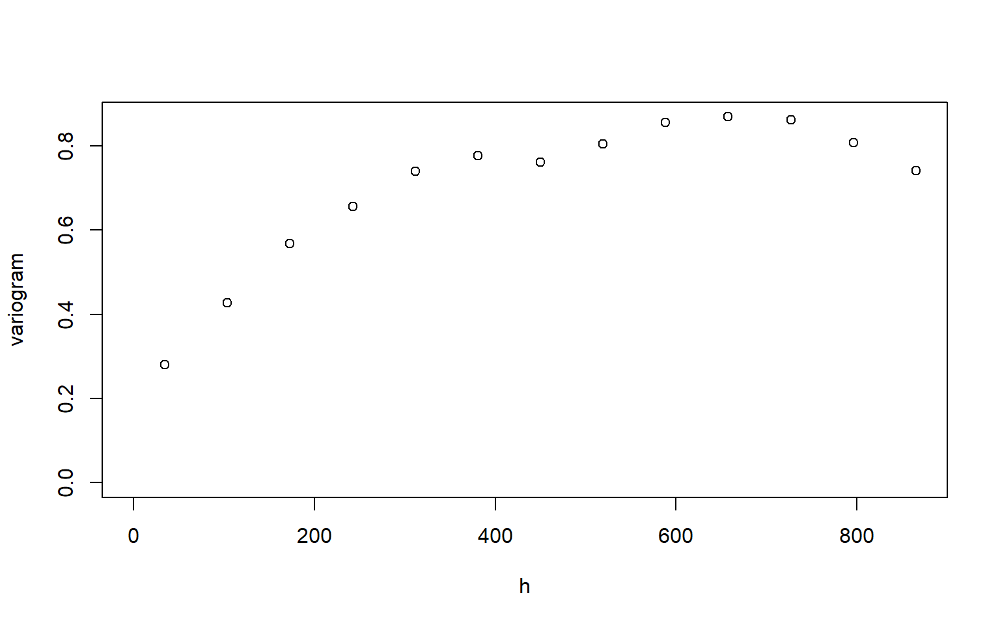
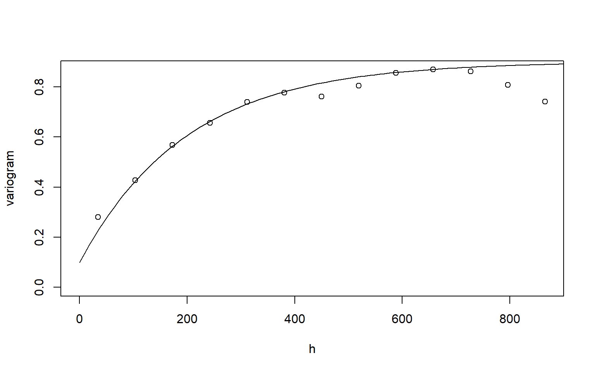

library(sp)
library(ggplot2)
library(maps)
library(mapdata)
library(geoR)dfgeo = readRDS("datasets/dfgeo.rds")
states <- map_data("state")
plain <- subset(states, region %in% c("nebraska", "kansas", "colorado","wyoming",
"south dakota", "north dakota", "montana",
"iowa", "minnesota", "missouri"))
gg2 = ggplot(data = plain) +
geom_polygon(aes(x = long, y = lat, group = group), fill = NA, color = "black") +
coord_fixed(1.4)
gg2 + geom_point(data = dfgeo, aes(x = long, y = lat, color = z), size = 1)
dfgeo$x = dfgeo$long * 79
dfgeo$y = dfgeo$lat * 111The dataset is divided into two part, where dfgeo_train is used for modelling, and dfgeo_test is for kriging.
idx = seq(1, length(dfgeo$x), 5)
dfgeo_test = dfgeo[idx, ]
dfgeo_train = dfgeo[-idx,]dfgeodata = as.geodata(dfgeo_train, coords.col=5:6, data.col=4, covar.col = 1:3)
plot(variog(dfgeodata, option="bin", max.dist=900),
xlab = "h", ylab = "variogram")## variog: computing omnidirectional variogram
For the initial value, you first need to decide what type of covariance function you want to use. Here, we use the exponential covariance function (i.e., the matern class with \(\kappa = 0.5\).)
For the exponential covariance function, we choose the initial value \((\sigma^2, \phi, \tau^2) = (0.8, 200, 0.1)\). Since the line roughly follow the circles (the semivariograms), \((\sigma^2, \phi, \tau^2) = (0.8, 200, 0.1)\) is an appropriate initial value.
plot(variog(dfgeodata, option="bin", max.dist=900),
xlab = "h", ylab = "variogram")## variog: computing omnidirectional variogramlines.variomodel(seq(0, 900, l = 100),
cov.pars = c(0.8, 200),
cov.model = "mat", kap = 0.5, nug = 0.1)
## MLE: constant trend + exponential covariance function.
m1 = likfit(dfgeodata, ini = c(0.8, 200), nug = 0.1)## ---------------------------------------------------------------
## likfit: likelihood maximisation using the function optim.
## likfit: Use control() to pass additional
## arguments for the maximisation function.
## For further details see documentation for optim.
## likfit: It is highly advisable to run this function several
## times with different initial values for the parameters.
## likfit: WARNING: This step can be time demanding!
## ---------------------------------------------------------------
## likfit: end of numerical maximisation.First, check the convergence message, that is, $convergence = 0 indicates a successful convergence. (The likfit uses the optim funciton to minimize, that is, the message is the same as the message from the optim function)
m1$info.minimisation.function## $par
## [1] 152.6097182 0.1641731
##
## $value
## [1] 644.579
##
## $counts
## function gradient
## 24 24
##
## $convergence
## [1] 0
##
## $message
## [1] "CONVERGENCE: REL_REDUCTION_OF_F <= FACTR*EPSMCH"Second, whether the model improves over the linear model. At the bottom of the summary table, there are two rows: Maximised Likelihood (for the spatial model) and non spatial model.
Summary table includes most of information.
summary(m1)## Summary of the parameter estimation
## -----------------------------------
## Estimation method: maximum likelihood
##
## Parameters of the mean component (trend):
## beta
## -0.2176
##
## Parameters of the spatial component:
## correlation function: exponential
## (estimated) variance parameter sigmasq (partial sill) = 0.7136
## (estimated) cor. fct. parameter phi (range parameter) = 152.6
## anisotropy parameters:
## (fixed) anisotropy angle = 0 ( 0 degrees )
## (fixed) anisotropy ratio = 1
##
## Parameter of the error component:
## (estimated) nugget = 0.1172
##
## Transformation parameter:
## (fixed) Box-Cox parameter = 1 (no transformation)
##
## Practical Range with cor=0.05 for asymptotic range: 457.1779
##
## Maximised Likelihood:
## log.L n.params AIC BIC
## "-644.6" "4" "1297" "1316"
##
## non spatial model:
## log.L n.params AIC BIC
## "-968" "2" "1940" "1949"
##
## Call:
## likfit(geodata = dfgeodata, ini.cov.pars = c(0.8, 200), nugget = 0.1)m1$beta
# the estimated covariance matrix of beta.
m1$beta.var
# test statistic for the example
(m1$beta - 1)/sqrt(m1$beta.var)## [1] -0.2175513
## [1] 0.04546281
## [1] -5.710303# cov.pars
m1$cov.pars
# partial sill
m1$sigmasq
# the range parameter
m1$phi
# nugget
m1$nugget## [1] 0.7136275 152.6097182
## [1] 0.7136275
## [1] 152.6097
## [1] 0.1171584# AIC of the model
AIC(m1)
# and others...
m1$practicalRange
logLik(m1)## [1] 1297.158
## [1] 457.1779
## 'log Lik.' -644.579 (df=4)Some key codes
## MLE: constant trend + matern class with kappa = 1.5
#plot(variog(dfgeodata, option="bin", max.dist=900),
# xlab = "h", ylab = "variogram")
#lines.variomodel(seq(0, 900, l = 100),
# cov.pars = c(0.8, 150),
# cov.model = "mat", kap = 1.5, nug = 0.1)
#m2 = likfit(dfgeodata, ini = c(0.8, 150), nug = 0.1, cov.model = "mat", kap = 1.5)
#m2$info.minimisation.function$convergence
#summary(m2)The model is fitted using the REML method.
Some key codes
## The variogram, note ``trend = ~elev"
#plot(variog(dfgeodata, option="bin", max.dist=900, trend = ~elev),
# xlab = "h", ylab = "variogram")
#lines.variomodel(seq(0, 900, l = 100),
# cov.pars = c(0.8, 200),
# cov.model = "mat", kap = 0.5, nug = 0.1)
#m3 = likfit(dfgeodata, ini = c(0.8, 200), nug = 0.1, trend = ~ elev, lik.method = "REML")There are two key functions for the kriging + krige.control: specify the parameter for kriging, no computing involved. + krige.conv: to compute
kc1 = krige.control(obj.model = m1, type.krige = "SK")
m1krig_sk = krige.conv(dfgeodata, krige = kc1, locations = dfgeo_test[,5:6])## krige.conv: model with constant mean
## krige.conv: Kriging performed using global neighbourhoodkc2 = krige.control(obj.model = m1)
m1krig_ok = krige.conv(dfgeodata, krige = kc2, locations = dfgeo_test[,5:6])## krige.conv: model with constant mean
## krige.conv: Kriging performed using global neighbourhood# The kriging predictors are the same
rbind(m1krig_sk$predict[1:5], m1krig_ok$predict[1:5])
# The kriging variances are different
rbind(m1krig_sk$krige.var[1:5], m1krig_ok$krige.var[1:5])## [,1] [,2] [,3] [,4] [,5]
## [1,] -0.05046874 -0.1163721 -0.9951614 0.5528769 -0.3275821
## [2,] -0.05046874 -0.1163721 -0.9951614 0.5528769 -0.3275821
## [,1] [,2] [,3] [,4] [,5]
## [1,] 0.3099821 0.2691624 0.3907208 0.3571768 0.3054627
## [2,] 0.3101195 0.2691632 0.3920374 0.3574023 0.3054643We take Model 3 as an example
#kc3 = krige.control(type.krige = "ok", obj.model = m3, trend.d = ~elev, trend.l = ~dfgeo_test[,3])
#m3pred = krige.conv(dfgeodata, krige = kc3, locations = dfgeo_test[,5:6])